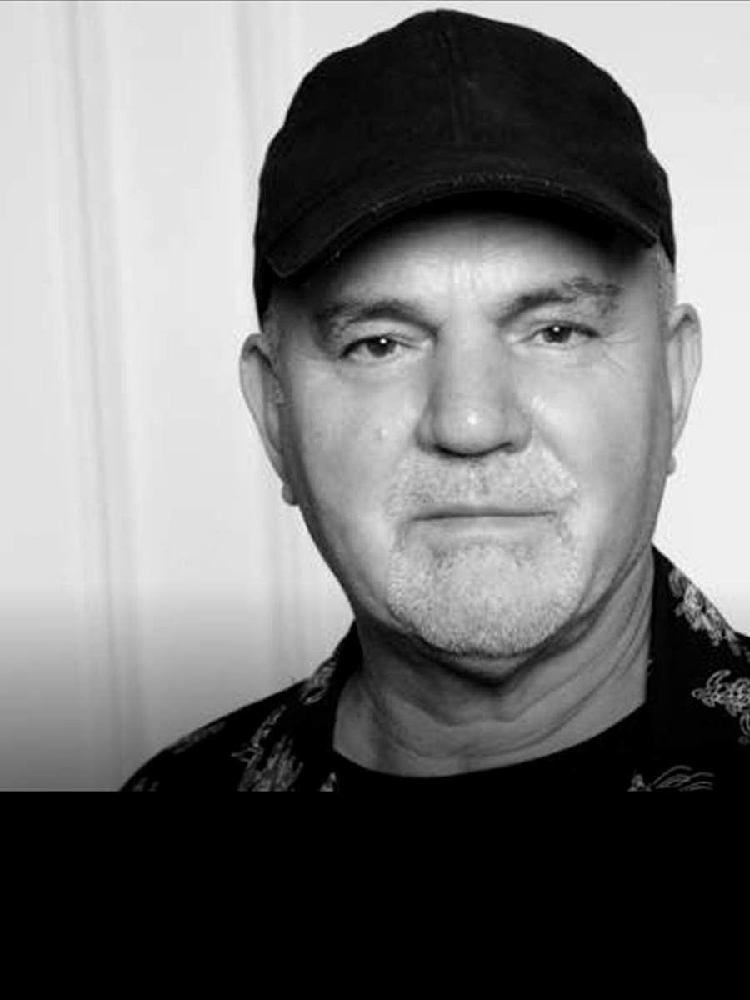
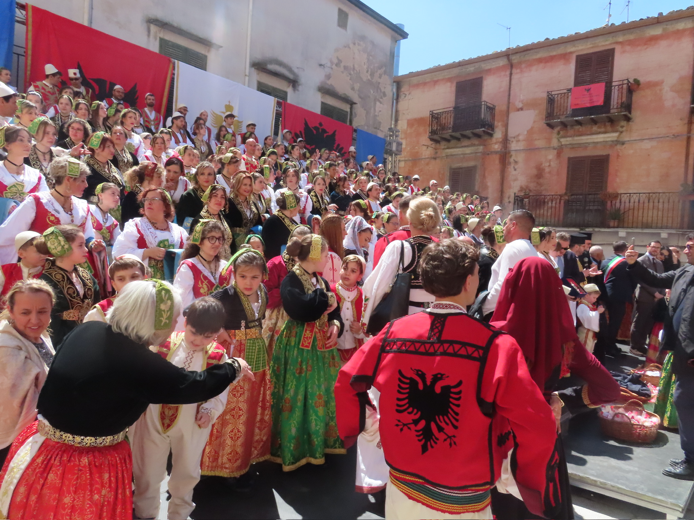
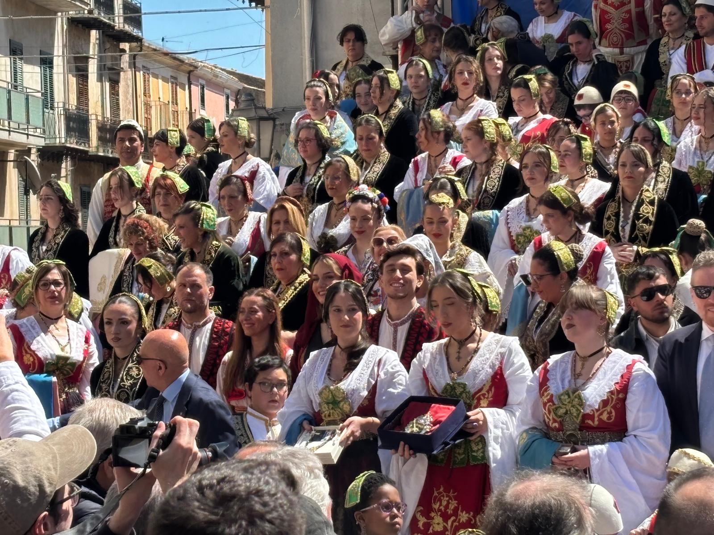

/ 01
Librazhd
Hapa virtuozë burrash, thembra të mprehta dhe nder i lëvizur në ritëm.
Albania
AKV “Hyjnesha” ist das einzige albanische Tanzensemble in Österreich und wurde 2022 in Graz gegründet. Mit insgesamt rund 60 Mitgliedern und über 20 Tänzerinnen und Tänzern trägt das Ensemble die reiche Tradition der albanischen Volkskultur in die Herzen des österreichischen Publikums.AKV “Hyjnesha” është ansambli i vetëm shqiptar i vallëzimit në Austri, i themeluar në vitin 2022 në Graz. Me gjithsej rreth 60 anëtarë dhe mbi 20 valltarë, ansambli mbart traditën e pasur të kulturës popullore shqiptare në zemrat e audiencës austriake.AKV “Hyjnesha” is the only Albanian dance ensemble in Austria, founded in Graz in 2022. With around 60 members in total and more than 20 dancers, the ensemble carries the rich tradition of Albanian folk culture to Austrian audiences.
Was “Hyjnesha” besonders macht: Unsere Choreografien gehen weit über das bloße Bewahren von Überlieferungen hinaus. Jeder Tanz erhält einen eigenen künstlerischen Atem, ohne dass der ursprüngliche Charakter der albanischen Folklore verloren geht.Ajo që e bën “Hyjnesha” të veçantë: Koreografitë tona shkojnë shumë përtej ruajtjes së thjeshtë të traditës. Çdo valle merr frymë artistike të veçantë, pa humbur karakterin origjinal të folklorit shqiptar.What makes “Hyjnesha” special: Our choreographies go far beyond mere preservation. Each dance receives its own artistic breath without losing the original character of Albanian folklore.
Wo der Reigen sich schließt, da schließt sich ein Versprechen: Wir vergessen nicht, woher wir kommen.Aty ku mbyllet vallja, mbyllet edhe një premtim: Nuk harrojmë prej nga vijmë.Where the circle closes, a promise closes with it: We do not forget where we come from.
Secila valle ka historinë e një vendi, ritmin e një bashkësie dhe frymën që e mban ansamblin gjallë.
Hapa virtuozë burrash, thembra të mprehta dhe nder i lëvizur në ritëm.
AlbaniaNjë kolazh rajonesh, kohësh dhe temperamentesh në një vepër të vetme.
MixZëri i lumit Drin, rrathe të gjerë, bartje e qetë dhe frymë e thellë.
KosovoVallja e çiftit plot butësi, një letër dashurie në lëvizje.
LirikNga malet e Rugovës, vijë e rreptë, shpinë e drejtë dhe forcë krenare.
Kosovo



Kurze Einblicke in Auftritte, Proben und die Energie des Ensembles.Pamje të shkurtra nga paraqitjet, provat dhe energjia e ansamblit.Short glimpses of performances, rehearsals and the ensemble's energy.

Folklor shqiptar · skenë · komunitet
Mbrëmje kulturore Arbëreshe
Gjilan, Kosovë
Kapfenberg, Austri
Graz, Austri
Prizren, Kosovë
Sicili, Itali
Piana degli Albanesi, Sicili, Itali
Kapfenberg, Austri

Një udhëtim kulturor tek Arbëreshët dhe një mbrëmje ku vallja bashkoi brezat.

Një skenë austriake, kostume shqiptare dhe ritmi i komunitetit në lëvizje.

Folklori si kujtesë, si familje dhe si gjuhë që kuptohet edhe pa fjalë.
Wir proben regelmäßig in Graz. Neue Tänzerinnen und Tänzer sind willkommen, ob mit Erfahrung oder mit reiner Neugier.Ne provojmë rregullisht në Graz. Valltarët e rinj janë të mirëpritur, me përvojë ose me kureshtje.We rehearse regularly in Graz. New dancers are welcome, whether experienced or simply curious.
Ansambli i vetëm shqiptar i vallëzimit në Austri, i themeluar në vitin 2022 në Graz.
Program skenik me valle, kostume dhe koreografi të folklorit shqiptar.
Mbështet kostumet, provat, udhëtimet dhe paraqitjet që e mbajnë gjallë kulturën shqiptare në Austri.
Bëhu partner